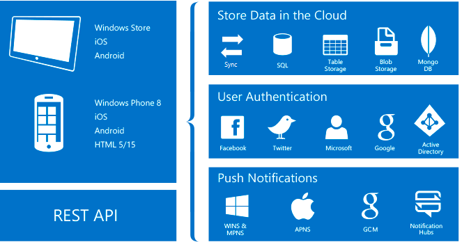

About Azure Mobile Apps¶
Azure App Service is a fully managed platform as a service (PaaS) offering for professional developers. The service brings a rich set of capabilities to web, mobile, and integration scenarios.
Azure Mobile Apps gives enterprise developers and system integrators a mobile-application development platform that's highly scalable and globally available. It provides authentication, data query, offline synchronization, and push registration capabilities to your mobile app using resources in the Azure cloud provided by Azure App Service.

Why Mobile Apps?¶
With the Mobile Apps feature, you can:
- Build native and cross-platform apps: Whether you're building native iOS, Android, and Windows apps or cross-platform Xamarin or Cordova (PhoneGap) apps, you can take advantage of App Service by using native SDKs.
- Connect to your enterprise systems: With the Mobile Apps feature, you can add corporate sign-in in minutes, and connect to your enterprise on-premises or cloud resources.
- Build offline-ready apps with data sync: Make your mobile workforce more productive by building apps that work offline, and use Mobile Apps to sync data in the background when connectivity is present with any of your enterprise data sources or software as a service (SaaS) APIs.
- Push notifications to millions in seconds: Engage your customers with instant push notifications on any device, personalized to their needs, and sent when the time is right.
Azure Mobile Apps features¶
The following features are important to cloud-enabled mobile development:
-
Authentication and authorization: Support for identity providers, including Azure Active Directory for enterprise authentication, plus social providers such as Facebook, Google, Twitter, and Microsoft accounts. Mobile Apps offers an OAuth 2.0 service for each provider. You can also integrate the SDK for the identity provider for provider-specific functionality.
-
Data access: Mobile Apps provides a mobile-friendly OData v3 data source that's linked to Azure SQL Database or an on-premises SQL server.
-
Offline sync: The client SDKs make it easy to build robust and responsive mobile applications that operate with an offline dataset. You can sync this dataset automatically with the back-end data, including conflict-resolution support.
-
Push notifications: The client SDKs integrate seamlessly with the registration capabilities of Azure Notification Hubs, so you can send push notifications to millions of users simultaneously.
-
Client SDKs: There is a complete set of client SDKs that cover cross-platform development (.NET, and Apache Cordova). Each client SDK is available with an MIT license and is open-source.
Azure App Service features¶
The following platform features are useful for mobile production sites:
-
Autoscaling: With App Service, you can quickly scale up or scale out to handle any incoming customer load. Manually select the number and size of VMs, or set up autoscaling to scale your mobile-app back end based on load or schedule.
-
Staging environments: App Service can run multiple versions of your site, so you can perform A/B testing, test in production as part of a larger DevOps plan, and do in-place staging of a new back end.
-
Continuous deployment: App Service can integrate with common source control management (SCM) systems, allowing you to easily deploy a new version of your back end.
-
Virtual networking: App Service can connect to on-premises resources by using virtual network, Azure ExpressRoute, or hybrid connections.
-
Isolated and dedicated environments: For securely running Azure App Service apps, you can run App Service in a fully isolated and dedicated environment. This environment is ideal for application workloads that require high scale, isolation, or secure network access.
Next steps¶
To get started with Azure Mobile Apps, complete a Getting Started tutorial. The tutorial covers the basics of producing a mobile back end and client of your choice. It also covers integrating authentication, offline sync, and push notifications. You can complete the tutorial multiple times, once for each client application.